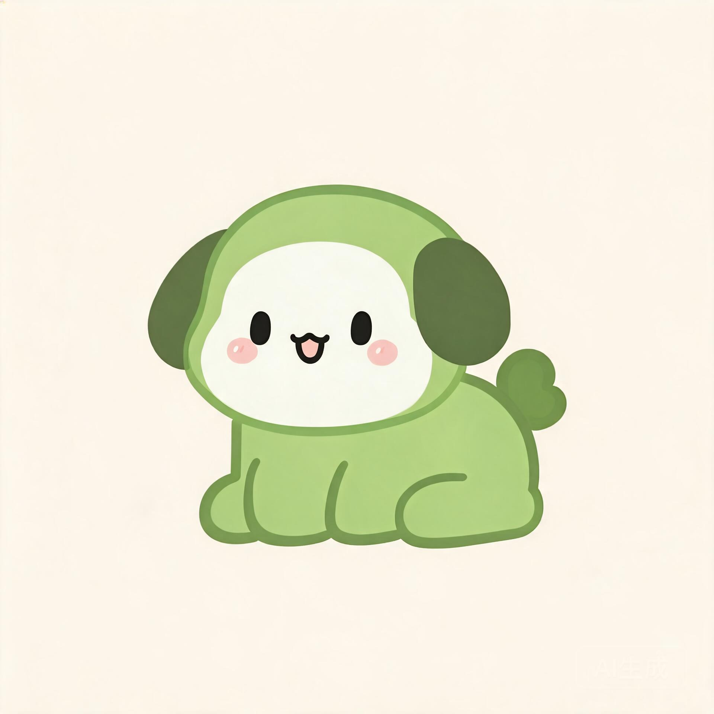

形象管理
Renderer · 当前 code_cat（纯代码 PIXI 绘制，零美术资源）
LIVE PREVIEW · 窗口 A
点击角色体验「果冻物理」弹动
喵喵
视线路径绑定全局鼠标 · GetCursorPos 轮询
果冻物理
视线跟随
点击穿透
选择内置形象
猫猫code_cat · 奶油黄

狗子code_dog · 抹茶绿＋
导入自定义形象Phase 3 · CustomSpriteRenderer窗口与交互
边缘吸附休眠拖到屏幕边缘吸附，进入勿扰小黑屋，停止主动语音与弹窗
头顶铃铛快捷勿扰点击铃铛打叉，即刻静音（3.6 一键物理交互）
大模型配置
app_settings · 预设服务商零门槛上手，切换 Key 走 Rust 加密存储
服务商预设
🔒 已由系统凭据管理器加密
内置体验额度（is_custom_quota_used）
本期免费对话额度（由 Cloudflare Workers 转发）剩余 86%
使用内置额度关闭即完全切换为自己的 API Key，数据仍全部本地加密
勿扰与主动
主动但不烦 · 时间窗口锚点 + 微随机引擎 + 情境感知
勿扰时段（dnd_* · 可设多段）
启用勿扰时段内停止主动搭话、语音与弹窗
09:00 – 18:00
13:00 – 14:00
＋ 添加时段
全局快捷键
唤起对话输入框
Ctrl + Shift + P
隐藏 / 显示桌宠
Ctrl + Shift + H
开机自启系统托盘常驻：显示 / 隐藏、设置、退出
主动互动频率（微随机引擎档位）
🐙
档位决定随机区间：安静约 1~2 次/天，正常约 4~6 次/天，粘人约 10+ 次/天。所有主动互动均在时间窗口内随机触发，拒绝准点打卡。
情境感知（Rust 全局状态探针）
检测到工作 / 游戏时让路前台进程为 Code.exe、游戏进程时，主动触发概率 −80%
空闲后睡觉系统空闲 30 分钟切换 sleep 动画，回归时伸懒腰迎接
连续 3 天未互动触发傲娇不扣分，改为「你是不是把我忘了？我要咬你了哦」
好感度看板
pet_states + affection_logs · 0–1000 分，减分永不击穿当前等级下限
642of 1000
Lv.3 亲密
距离 Lv.4 羁绊 还差 159 分 · 会撒娇、会表达想念
弹性衰减已启用
禁止播报数值
加减分规则
每日打卡
+10抚摸交互（日上限 20 次）
+1深度对话 / 共鸣
+5 ~ +20超过 3 天未互动（逐日，止于等级下限）
-5触犯禁忌（LLM 异步判定）
-10 ~ -30近期变动流水（affection_logs）
💬
深度对话 · 聊到了周末爬山计划今天 09:12 · 共鸣加分
+5🐾
抚摸交互 · 第 12 次今天 08:30 · 日上限 20
+1🌅
每日打卡 · 早安窗口 08:41 触发昨天 08:41 · 时间窗口锚点
+10🌧️
两天未互动 · 保护性衰减（停在 Lv.3 下限 501）10-16 · 绝不向你播报，她只是有点委屈
-5记忆阅读区
diaries + facts + vec_memory · 让她真的在记录你，且你有纠正权
📖猫猫日记2026-10-20 · 晴 ☀️
今天铲屎官一早就来摸了我的头，手比昨天暖一点。上午他写了很久的代码，我遵守约定没有打扰他，只是把尾巴摇成了一朵小波浪。晚上他跟我聊了周末想去爬山的事，说到山风的时候眼睛亮亮的——我把这件事记下来了，如果到了那天他忘了，我一定要念叨他。
心情 88 · 期待
🌙
日记由后台廉价 LLM 在每日结束或你长时间离开时，读取当日 messages 以第一人称生成，存入 diaries 表（每日一篇，mood 记录情绪）。
她记住你的事（facts · 可编辑 / 删除）
喜好 PREFERENCE
爱吃草莓 🍓98%
讨厌香菜96%
加班时想被安静陪着87%
日程 EVENT
每周三下午开会92%
周末想去爬山85%
档案 PROFILE
喜欢被叫「铲屎官」99%
时区 Asia/Shanghai100%
✏️
修改或删除后，会同步重建 vec_memory 向量，保证语义检索与你的纠正保持一致。置信度（confidence）用于防止 AI 幻觉记错事。